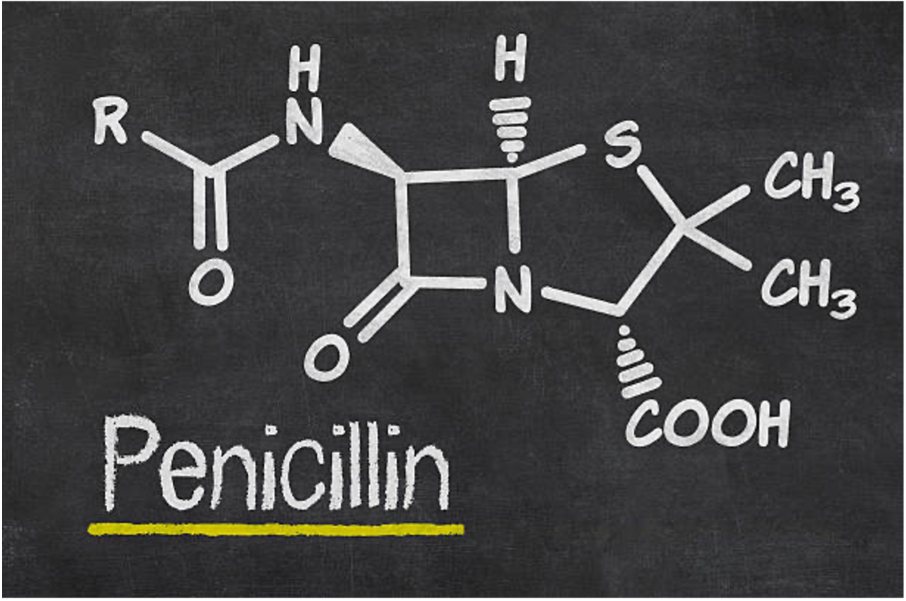

Dorothy Mary Crowfoot Hodgkin
a Nobel Prize-winning British chemist who advanced the technique of X-ray crystallography to determine the structure of biomolecules, which became essential for structural biology
There's the moment when you know you can find out the answer and that's the period you are sleepless before you know what it is. When you've got it and know what it is, then you can rest easy.
Timeline:
- 1910 - Birth: Dorothy Mary Crowfoot was born on May 12, 1910, in Cairo, Egypt.
- 1932 - Doctoral Research: She began her doctoral research at the University of Cambridge, focusing on X-ray crystallography.
- 1934 - X-ray Analysis of Organic Compounds: In 1934, she published her first paper on X-ray analysis of organic compounds.
- 1945 - Contributions to Antibiotics: Hodgkin and her colleagues, including biochemist Barbara Low, solved the structure of penicillin, demonstrating, contrary to scientific opinion at the time, that it contains a β-lactam ring. 
- 1956 - Structure of Vitamin B12: In 1956, she determined the three-dimensional structure of vitamin B12, a groundbreaking achievement.
- 1964 - Nobel Prize: Dorothy Crowfoot Hodgkin was awarded the Nobel Prize in Chemistry for her work in X-ray crystallography
- 1960 - Founding Fellow of Churchill College: She became a founding fellow of Churchill College, Cambridge, in 1960.
- 1978 - College Master: From 1978 to 1985, she served as the second Master of Churchill College.
- 1984 - Discovery of Insulin Structure: Her research on insulin's structure, which started in the 1930s, was finally realized in 1984.
- 1994 - Passing: Dorothy Crowfoot Hodgkin passed away on July 29, 1994, leaving behind a lasting legacy in the field of crystallography and structural biology.